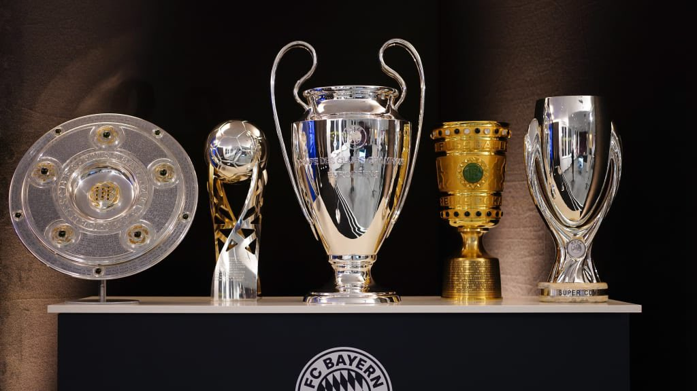
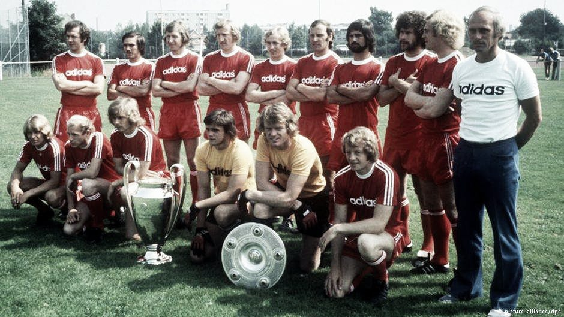
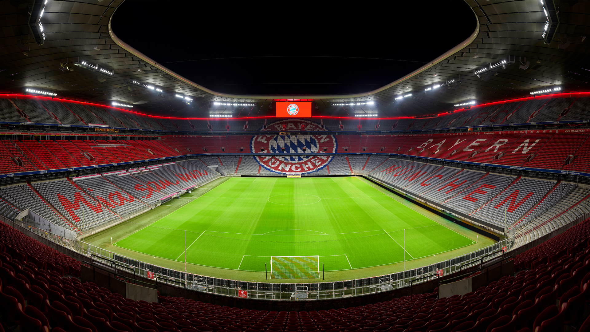

La historia comienza con Franz John, de Berlín. El documento que certifica la creación del club fue firmado por 17 miembros en el céntrico restaurante muniqués "Gisela" en febrero de 1900. Fueron los primeros jugadores, y uno o dos más siguieron sus pasos. Por consideraciones financieras y para resolver el problema de la disponibilidad de una cancha, el Bayern unió sus fuerzas a las del Münchner Sport-Club (MSC) el 1 de enero de 1906, pero aún mantuvieron su independencia. La concesión que hicieron fue vestir los colores del MSC, que consistían en calzones rojos y camisa blanca. El equipo es hoy en día conocido como Die Rothosen (los pantalones rojos). El club ganó impulso cuando a principios de 1907 los rojos se trasladaron a su nuevo campo, el estadio de Leopoldstraße. El partido que se jugó para conmemorar el traslado a su nuevo hogar fue con los locales rivales FC Wacker, y terminó 8-1 a favor de los locales. Ese fue el primer paso de la ruta del que se llegaría a convertir en el número uno del fútbol en Múnich. Los hinchas podían presenciar el partido en el confort de una auténtica grada. En 1910 el club consiguió alzar el título de campeones del Distrito Este.